두손공구
두손공구에서 소개하는 공구들은 기존에 사용해오던 기성공구들에서 느끼는 불편함을 개선하여 재설계된 제품들을 소개합니다. 전문직이나 가정, 학교 등 다양한 분야에서 사용 가능하도록 만들어진 제품들이며 대부분의 제품들은 해외에서 판매가 되고 있습니다. 국내에서도 많은 사람들이 사용함을 바라는 목적으로 만들었으며 국내에도 공구의 불편함에서 개선이 된 제품을 필요로 하는 사람들에게 제품을 소개합니다.
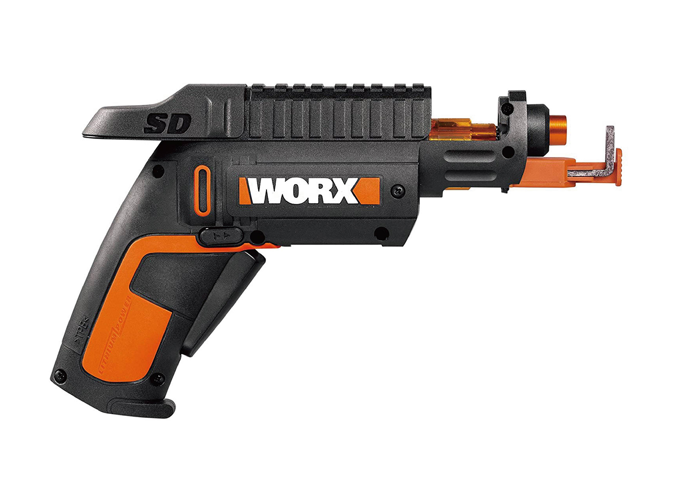
WORX
SD Semi-Automatic Power Screw Driver
SD Semi-Automatic Power Screw Driver
스크류 홀더가 장착된 WORX SD 반자동 드라이버는 무선 드라이버입니다. 드릴에 비트를 저장할 수 있어 분실을 방지해줍니다. 작업 시 슬라이드 레버에서 비트를 밀어주어 안정감 있는 작업을 도와줍니다. 기본 카트리지를 빼내고 필요한 비트를 삽입해 사용할 수 있습니다.
추천 가정
크기 9.6 x 4.5 x 12.7cm
무게 680g
구성품 본체, 충전기, 베어 툴
크기 9.6 x 4.5 x 12.7cm
무게 680g
구성품 본체, 충전기, 베어 툴
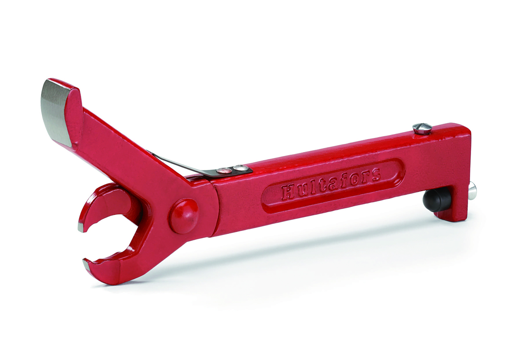
Hultafors
Nail puller Atle
Nail puller Atle
나무에 깊숙이 박혀있는 못을 뺄 때 사용합니다. 갈고리 부분으로 못을 잡고 망치를 쳐서 단단히 고정한 후, 망치를 이용하여 잡아당겨 사용합니다.
추천 목수, 철거작업
크기 14 x 2.8 x 34cm
무게 240g
구성품 본체
크기 14 x 2.8 x 34cm
무게 240g
구성품 본체
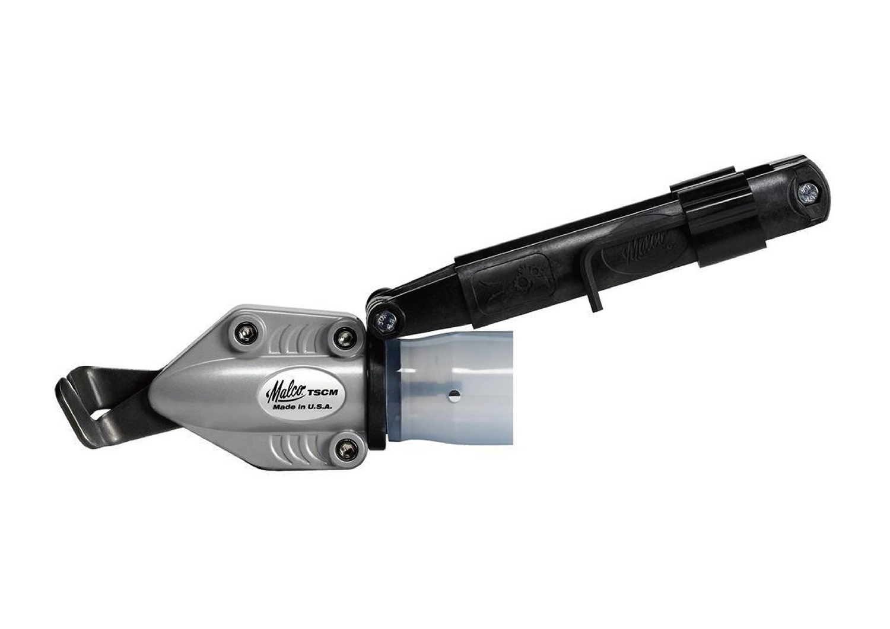
Malco TSCM
Corrugated Metal Turbo Shear
Corrugated Metal Turbo Shear
본 제품은 전동드릴에 연결하여 최대두께 0.61mm의 강철 패널을 절제할 때 사용합니다. 전면 블레이트의 360도 회전으로 지붕 절단을 자유자재로 할 수 있습니다. 블레이드는 탄소강으로 되어있으며 교체가 가능합니다. 사용 드릴은 최소 18V 이상이 적절하며 정밀 작업 시에는 드릴 모드로 사용합니다.
추천 가공
크기 19.8 x 42.6 x 11.3cm
무게 1.13kg
구성품 본체
크기 19.8 x 42.6 x 11.3cm
무게 1.13kg
구성품 본체
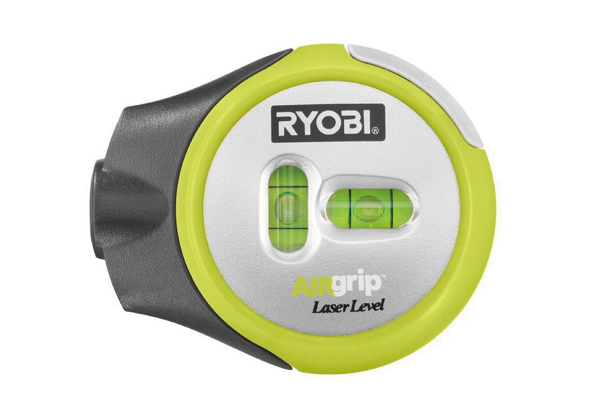
RYOBI
Air Grip Compact Laser Level
Air Grip Compact Laser Level
최대 4.8m까지 측정이 가능한 소형 레이저 레벨기입니다. 제품 뒷면에 진공 공기 압축기가 내장되어 있습니다. 평평하고 매끄러운 표면에 장착하여 수평을 유지할 수 있습니다. 사진, 액자, 커튼 로드 및 직선 절단 작업에 적절합니다. 정확한 레이저를 위해 장치 상단에 몇 가지 수평 레벨이 설치되어 쉽고 정확하게 사용할 수 있습니다.
추천 전시장, 건물 외벽
크기 18.2 x 15.2 x 5cm
무게 158g
구성품 본체
크기 18.2 x 15.2 x 5cm
무게 158g
구성품 본체
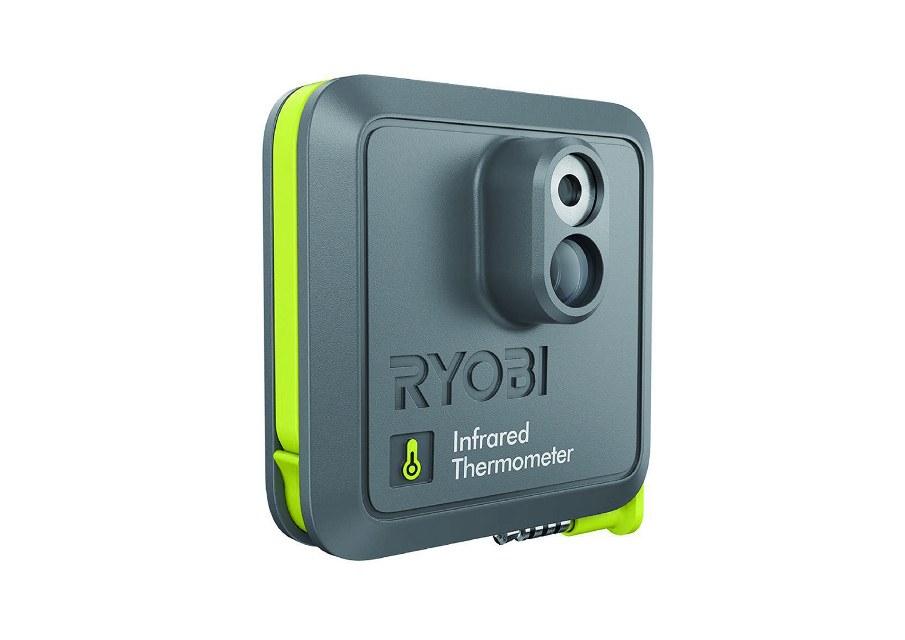
RYOBI
ES2000 Infrared Thermometer (Phone Works)
ES2000 Infrared Thermometer (Phone Works)
사물의 표면 온도를 측정하고 기록하는 도구입니다. RYOBI 앱을 사용해 휴대전화를 적외선 온도계로 바꿉니다. -30°C~350°C 사이의 온도를 측정 할 수 있습니다. 고화질 이미지와 비디오를 캡처하여 이메일과 소셜 네트워크를 통해 공유할 수 있습니다.
추천 가정
크기 14 x 14 x 5.08cm
무게 153g
구성품 본체
크기 14 x 14 x 5.08cm
무게 153g
구성품 본체

RYOBI
Moisture Meter ES3000 (Phone Works)
Moisture Meter ES3000 (Phone Works)
목재, 벽, 천장, 카펫의 누수 및 장작의 습기를 감지하기 위한 수분 측정 도구입니다. 스테인레스 핀을 측정 대상 표면에 붙이면 확인이 가능합니다. RYOBI 앱을 사용해 휴대전화를 수분 측정기로 바꿉니다.
추천 가정, 장작의 습기
크기 15.2 x 14 x 3.8cm
무게 113g
구성품 본체
크기 15.2 x 14 x 3.8cm
무게 113g
구성품 본체
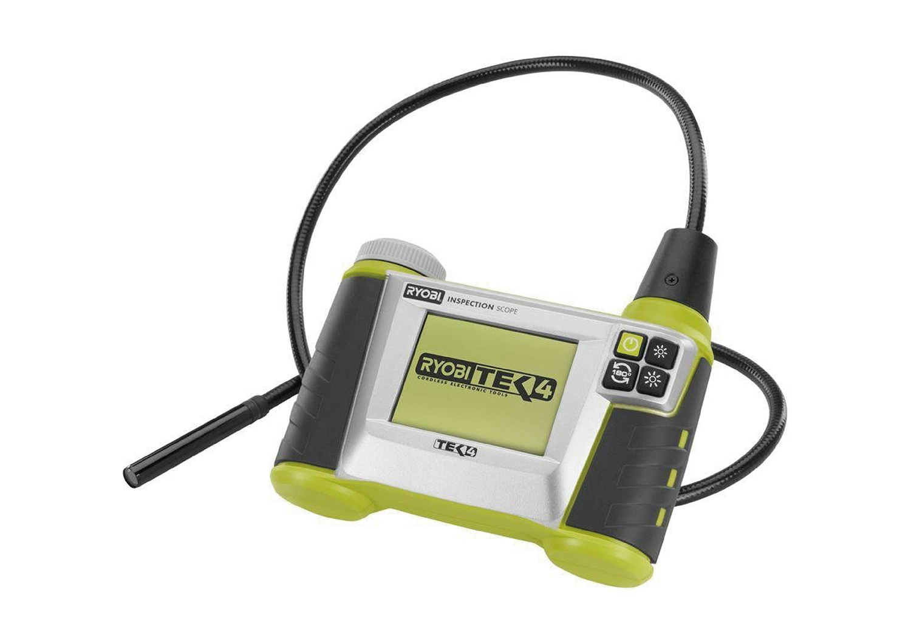
RYOBI
Inspection Scope
Inspection Scope
작업 현장용으로 배관, 주택 수리에 적합합니다. 카메라에는 4단계의 LED 조명이 내장되어 있습니다. 2.7inch 고해상도 컬러 LCD 화면으로 선명한 이미지를 제공합니다. 줌 기능은 최대 2배 확대됩니다. 카메라 케이블의 방수는 최대 30분입니다. 재충전 시기를 알려주는 전압 표시기 화면이 180도 회전하여 작업자의 시각에 맞춰 조정됩니다.
추천 배관수리
크기 33 x 26.6 x 7.6cm
무게 498g
구성품 본체, 충전기
크기 33 x 26.6 x 7.6cm
무게 498g
구성품 본체, 충전기
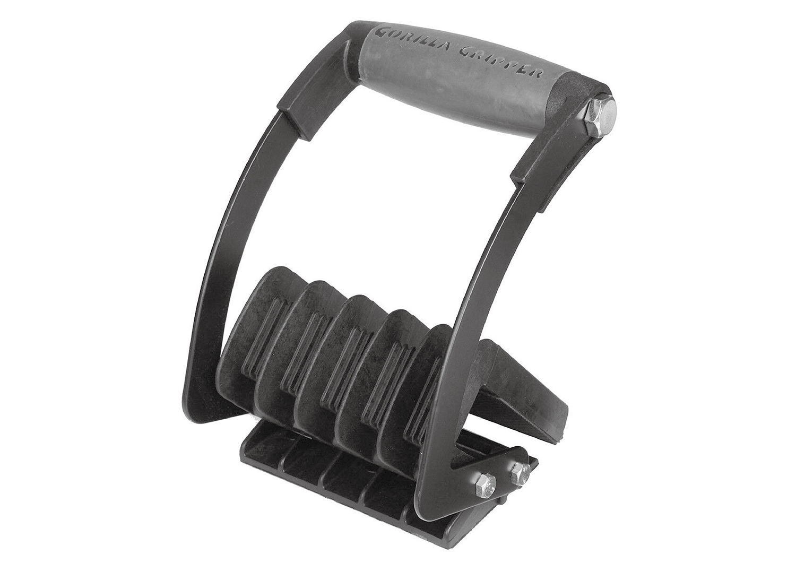
Gorilla
Gripper Advantage
Gripper Advantage
한 손으로 무거운 시트 제품(합판, 보드, 두꺼운 유리 등)을 운반할 수 있습니다. 하루 종일 편안하게 사용할 수 있는 인체 공학적 쿠션 핸들이 적용되었습니다. 작업을 편리하게 하고 등, 목, 어깨, 팔 및 손에 대한 부상의 부담 및 위험을 크게 줄입니다. 내구성 있는 나일론 폴리머로 제작된 손잡이와 에폭시 코팅 강철로 제작되었습니다. 시트 두께는 최대 21mm까지 가능합니다.
추천 건설 현장, 운반업
크기 16 x 21 x 13.4cm
무게 848g
구성품 본체
크기 16 x 21 x 13.4cm
무게 848g
구성품 본체
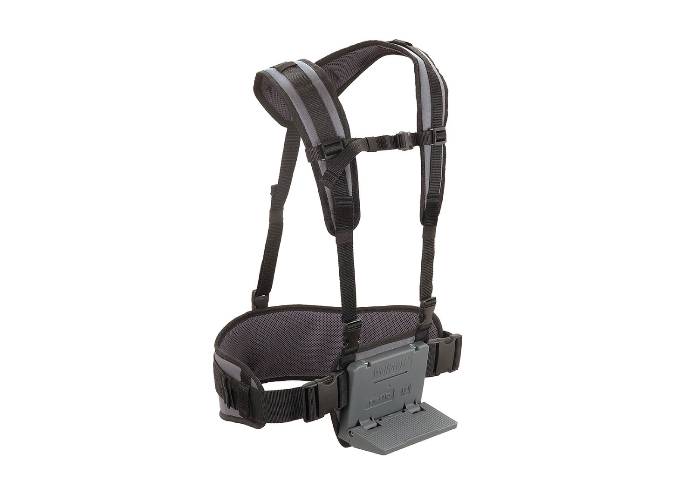
Wolfcraft
Carrying Belt System
Carrying Belt System
상자 운반용 벨트입니다. 푹신하게 처리된 어깨끈과 허리끈이 있어 물건 운반을 편리하게 도와줍니다. 상자 또는 쇼핑 바구니와 같은 무거운 짐을 안전하게 운반해줍니다. 벨트는 간편하게 착용할 수 있으며 신체 크기에 맞게 개별적으로 조정할 수 있습니다. 전체적으로 75%의 힘을 줄여줍니다.
추천 배송업
크기 8.89 x 29.9 x 25.9(cm
무게 848g
구성품 본체
크기 8.89 x 29.9 x 25.9(cm
무게 848g
구성품 본체
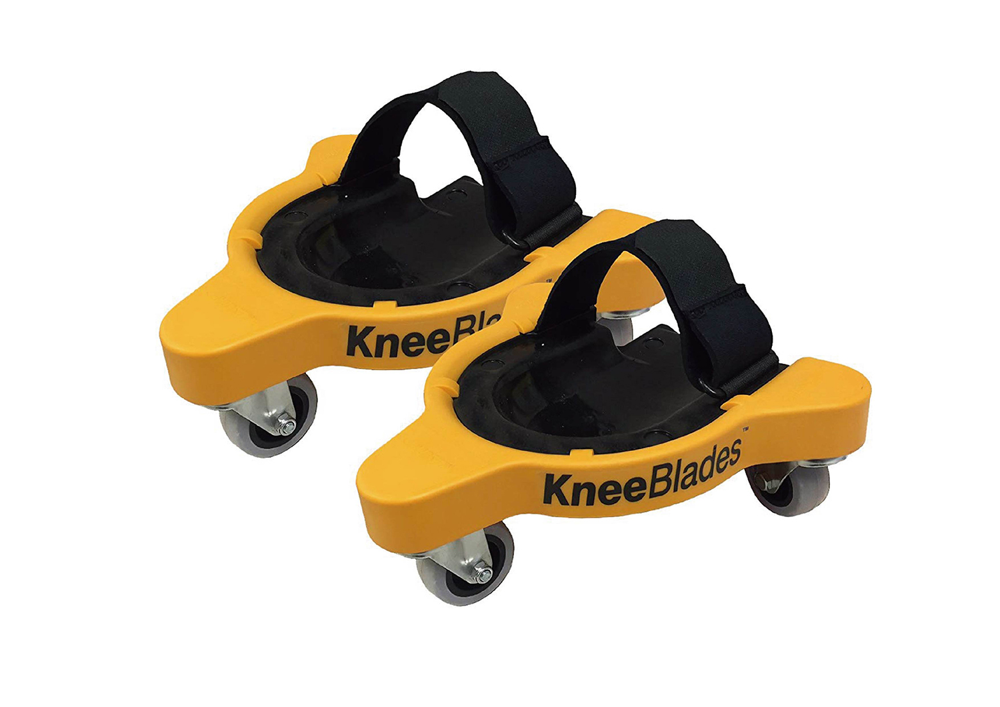
Milescraft
KneeBlades Rolling Knee Pads
KneeBlades Rolling Knee Pads
무릎을 꿇어야 하는 작업을 위해 만들어졌습니다. 한쪽에 3륜 바퀴가 달려있어 바닥에서 360도 회전이 가능하여 균형, 유연성 및 이동성을 향상시킵니다. 지면 작업에 유리합니다. 버튼을 누르면 무릎 패드로 이동할 수 있습니다.
추천 도장공, 도배사, 가정
크기 27.6 x 27.1 x 17.2(cm
무게 1.58kg
구성품 본체
크기 27.6 x 27.1 x 17.2(cm
무게 1.58kg
구성품 본체
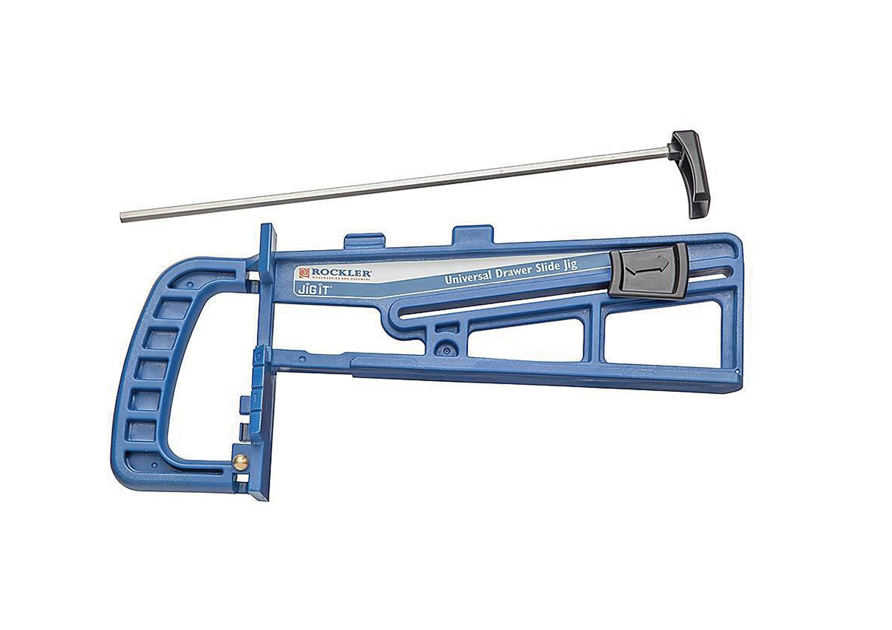
Rockler
Universal Drawer Slide Jig
Universal Drawer Slide Jig
슬라이드로 된 모든 유형의 서랍을 설치하는데 사용됩니다. 슬라이드를 안전하게 고정하는 잠금장치가 있고, 원하는 경우 제자리에 고정 할 수 있습니다. 빠르고 반복이 가능하며 높이 설정이 가능합니다. 프레임 레일, 캐비닛 바닥을 조절하는 막대가 있습니다.
추천 서랍 조립
크기 20 x 38.1 x 8.8cm
무게 600g
구성품 길이 조절 막대
크기 20 x 38.1 x 8.8cm
무게 600g
구성품 길이 조절 막대
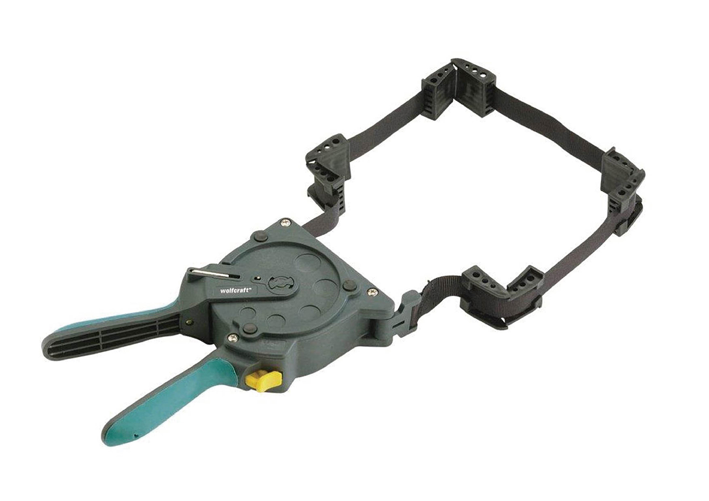
Wolfcraft
OneHand Ratcheting Band Clamp 16"
OneHand Ratcheting Band Clamp 16"
액자, 가구, 선반을 접착하는데 사용하는 클램프 보조 장치입니다. 다양한 각도로 작업이 가능하며 한 손으로 클램프를 빠르고 쉽게 채울 수 있습니다. 케이스가 있어 모서리를 보호할 수 있으며 비틀리지 않도록 도와줍니다.
추천 목공 및 기타 고정작업
크기 29.4 x 25.4 x 4.8cm
무게 453g
구성품 본체, 스트렙 지지대
크기 29.4 x 25.4 x 4.8cm
무게 453g
구성품 본체, 스트렙 지지대
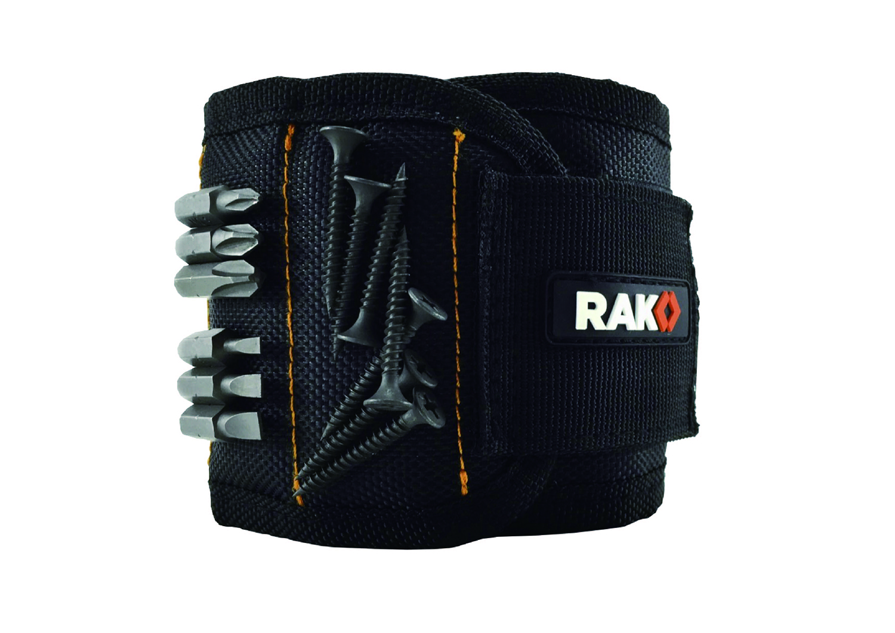
RAK
Magnetic Wristband
Magnetic Wristband
강한 자력을 가진 손목 밴드입니다. 나사, 못, 와셔, 드릴비트 등을 부착하여 천장이나 좁은 곳에서 작업하기 수월하게 만들어졌습니다. 메쉬 소재로 제작된 밴드는 통기성을 확보해줍니다.
추천 천장 공사, 정비공
크기 cm
무게
구성품
크기 cm
무게
구성품
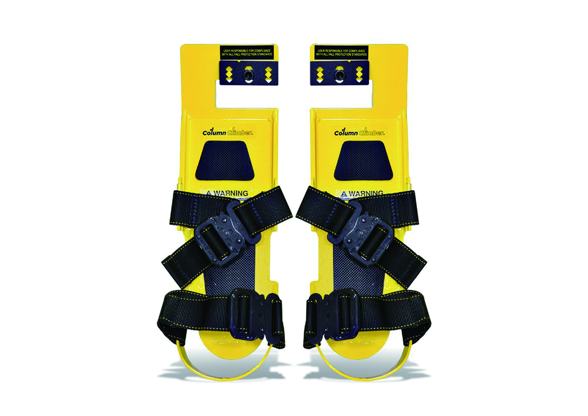
column climber
H빔에서 작업자가 안전하고 손쉽게 오르내리도록 만들어졌습니다. 미끄럼 방지의 밑창과 고강도 합금으로 제작되어 개당 113kg의 하중을 버틸 수 있습니다. 혼자서 자유자재로 움직일 수 있어 작업시간을 단축할 수 있습니다. 추가로 Column Claw, T-Lanyard등의 안전 장비를 추가로 구매할 수 있습니다.
추천 H빔 작업자
크기 39.4 x 12.7cm
구성품 본체
크기 39.4 x 12.7cm
구성품 본체
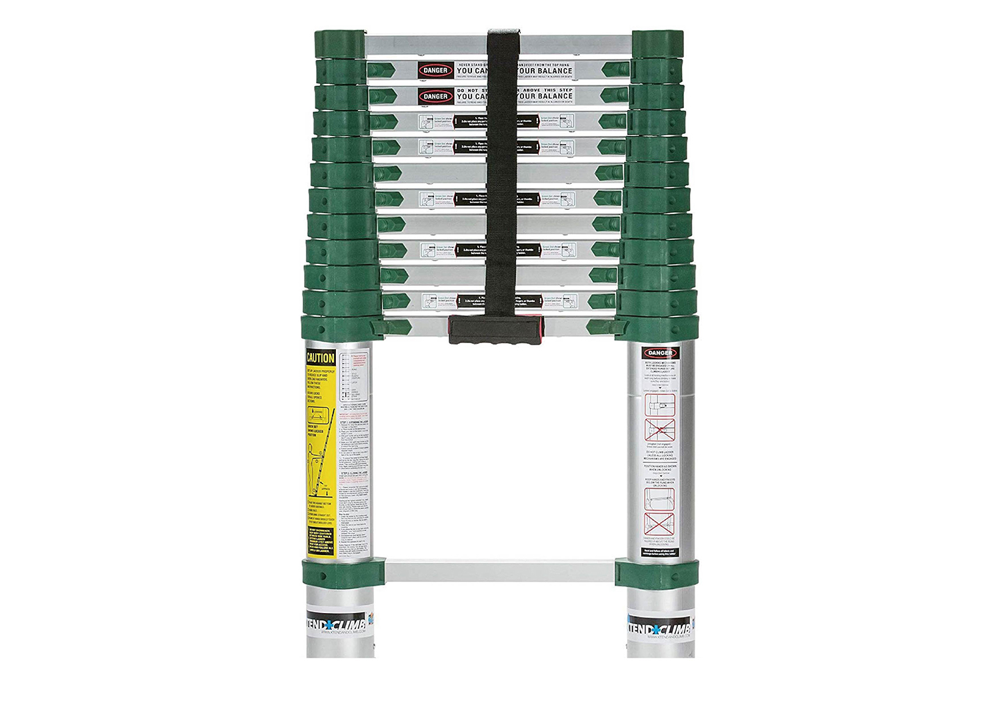
Xtend & Climb
Pro series 780P+ Telescoping Ladder
Pro series 780P+ Telescoping Ladder
부피가 작은 다목적 사다리입니다. 텔레스코픽 기능이 가능하여 최대 3.81m까지 연장이 가능합니다. 안전성을 위해 두꺼운 알루미늄 합금으로 제작 되었으며, 작업 높이에 따라 다리를 조정할 수 있습니다. 가볍고 보관이 용이한 장점이 있습니다.
추천 가정, 소형차에 적재시
크기 104.1 x 49.5 x 8.89cm
무게 11.1kg
구성품 본체
크기 104.1 x 49.5 x 8.89cm
무게 11.1kg
구성품 본체